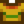

Omlett
Ugrás a navigációhoz
Ugrás a kereséshez
| Omlett | ||||||||||
| Ez szuper bolyhos. | ||||||||||
| Információ | ||||||||||
| Forrás | Ételek | |||||||||
| Energia / Életerő |
|
|||||||||
| Eladási ár |
| |||||||||
| ||||||||||
| Recept | ||||||||||
| Forrása |
| |||||||||
| Hozzávalók | ||||||||||
Az Omlett egy főtt étel, amit a fejlesztett parasztház konyhájában, vagy a szabadtűzi készleten lehet elkészíteni.
Az omlett véletlenszerűen megjelenhet szombatonként Krobus üzletében, a kukában a szalon mellett, vagy a szalon változó készletében. Egy omlettet kaphatunk egy rejtélyes doboz kinyitásával.
Ajándékozás
| Falusiak reakciója
| |
|---|---|
| Kedvelt | |
| Nem kedvelt | |
| Utált | |
Csomagok
Az omlett nem használt egyetlen csomagban sem.
Receptek
| Kép | Név | Leírás | Hozzávalók | Energia / Életerő | Állapothatás | Állapothatás időtartama | A recept forrása | Eladási ár |
|---|---|---|---|---|---|---|---|---|
| Gazdák ebédje | Ez majd beindít. |
Szabászat
Az omlett felhasználható a varrógép orsóján, szövettel az anyagtovábbítón,  Sárga és zöld póló készítésére. Fehérre szinezi az anyagtovábbítón található festhető ruhadarabot, ha ezt tesszük a varrógép orsójára.
Küldetések
Az omlett egyetlen küldetésben sincs használva.
Előzmények
- 1.4: A recept ára
 500g-ról 100g-ra csökkent. Innetől használható a szabászatban.
500g-ról 100g-ra csökkent. Innetől használható a szabászatban. - 1.5: Mostantól elkészíthető a szabadtűzi készleten.